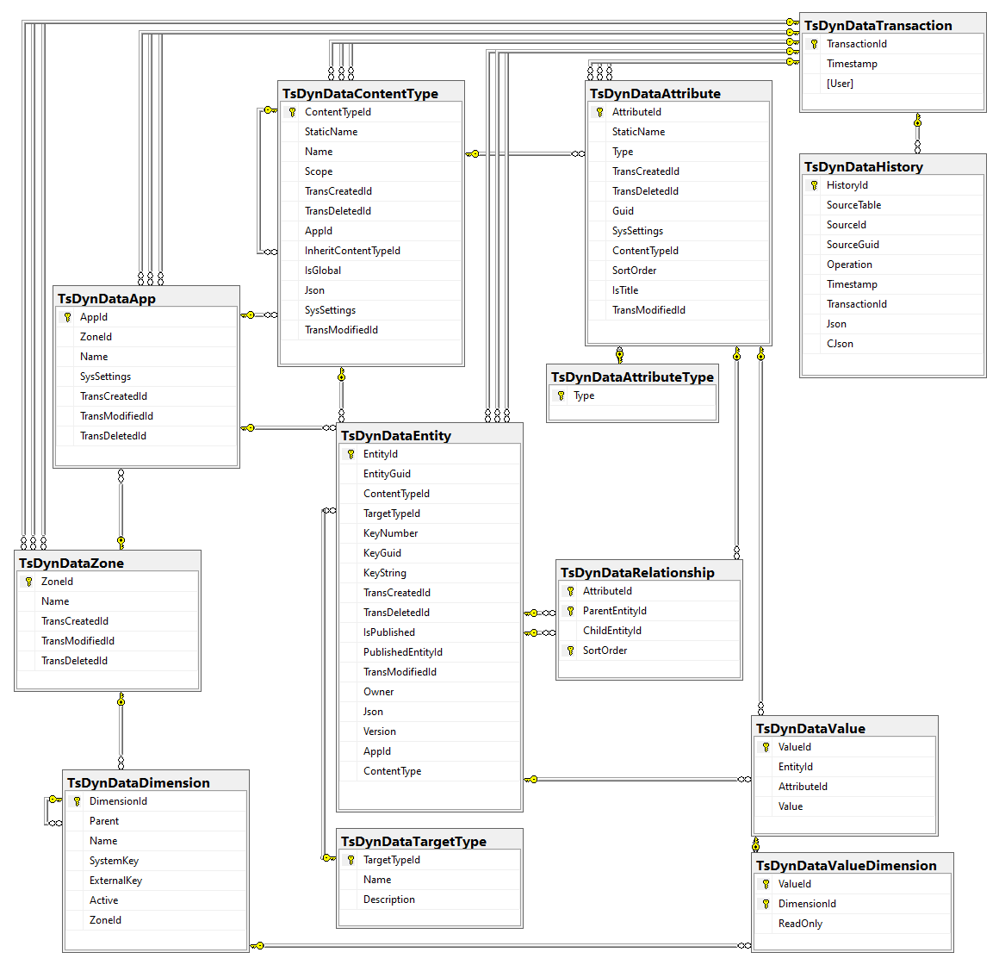
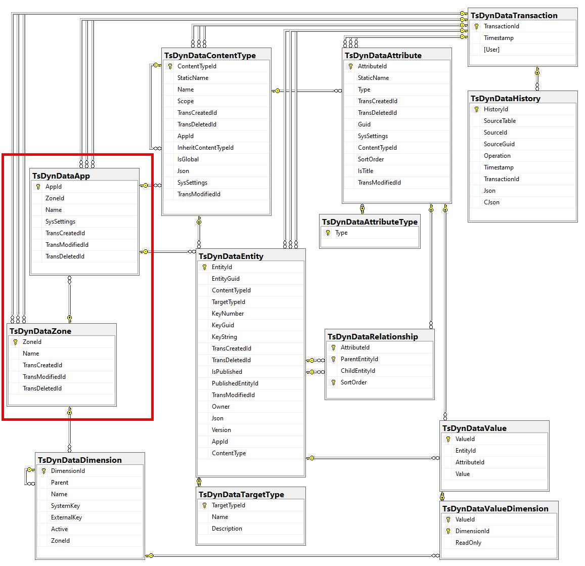
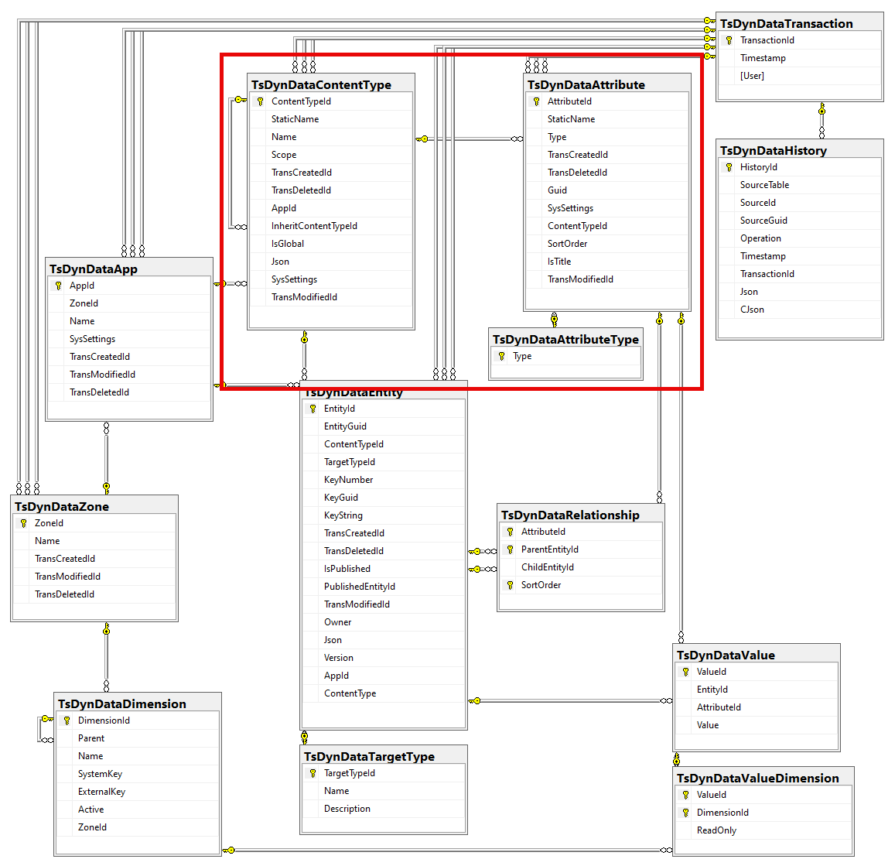
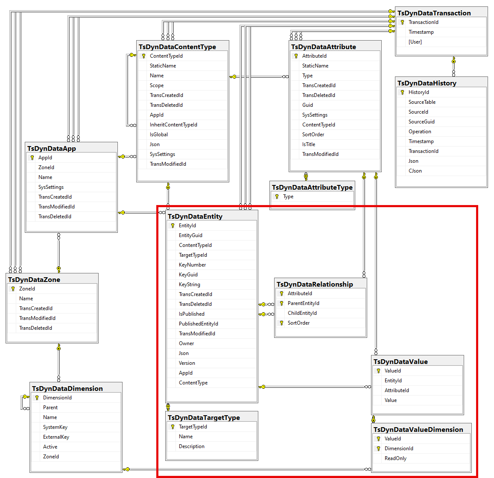
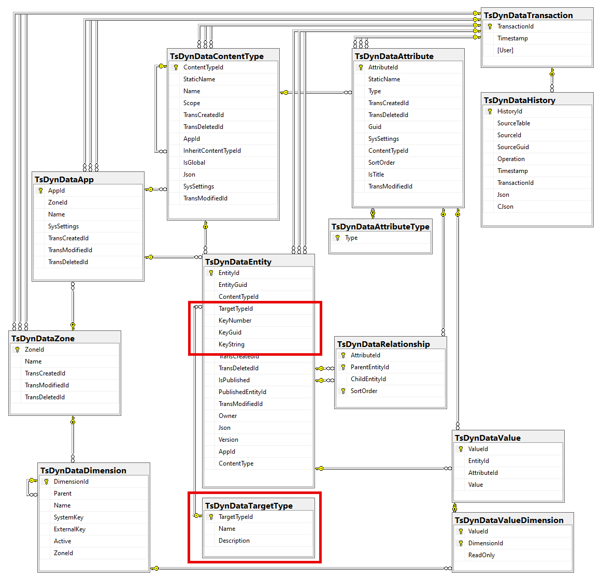
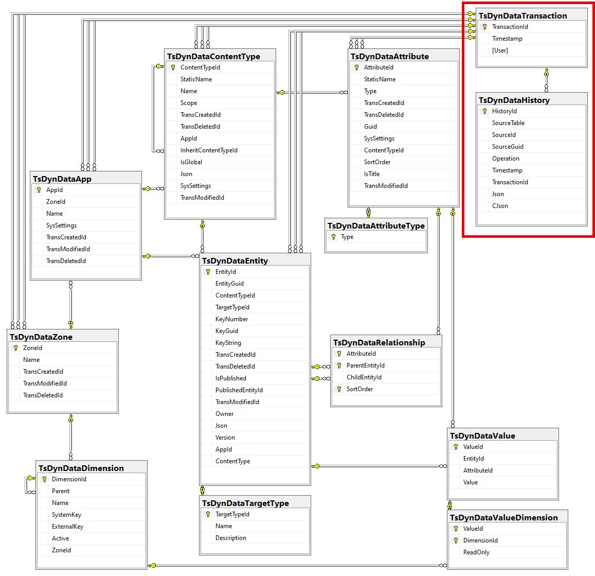

2sxc & EAV Database
2sxc build on top of the EAV (Entity-Attribute-Value) data model. This is a very flexible data model, but it can be complex to understand.
This section should help you understand how data is stored in the SQL database.
Note
This is the new v20 schema. You can see the changes in the changes v20 section.
Overall Structure
This diagram shows the current structure of the database, with all tables and their relationships. It has various aspects such as:
- Containers grouping data into Apps and Zones
- Schema like ContentTypes and Attributes
- Languages called Dimensions in the SQL
- Data like Entities, Values and Relationships
- Metadata which connects data to something else it describes
- History to track changes over time
Click on the image to see it larger.
Aspects of the Database
Containers - The App and Zone
The app is a isolated container, similar to a small database.
These are what the App is responsible for:
- Has an own name and GUID
- It belongs to a Zone (like a web site)
- It has some SysSettings (JSON) which are used for advanced configuration such as data sharing with other apps
- It's the main anchor for ContentTypes and Entities, which belong to this app
The Zone is a larger container, which can contain multiple Apps. It typically matches a single web site/portal on a system, but in special cases multiple sites can share a Zone.
Schema - ContentTypes and Attributes
The schema is the structure of the data. Since this is a dynamic data model using the EAV (Entity-Attribute-Value) model, the schema is very flexible. It consists of the following parts:
- ContentTypes - these are the main types of data, like "Person", "Product", etc.
- Attributes - these are the properties of the ContentTypes, like "Name", "Country", etc.
- AttributeTypes - these are the data types of the attributes, like "Text", "Number", etc.
Data - Entities, Values and Relationships
The data is the actual information stored in the database. It consists of the following parts:
- Entities - these are the individual items of data, like a specific person or product.
- Values - these are the actual data points for the attributes, like "John Doe" for the Name attribute.
- Relationships - these define how entities are related to each other, like a person having multiple addresses.
Metadata - Connecting Data to Targets
The metadata is an optional layer which allows data to reference something else which it describes.
- DataTargetType - this describes what kinds of targets there are, so that referencing a target with id
3can be the person with id3, or the product with id3, etc. - Entity.TargetTypeId - this - if set - defines what target type its addressing
- Entity.Key... - this is the specific key of the target, which is being referenced
Note: this structure will probably change in the near future.
History - Tracking Changes Over Time
The history is a way to track changes to the data over time.
It consists of the following parts:
- DataTransaction - this is a timestamped log entry to track changes to the data. All tables reference these timestamps to know when the data was changed and by whom.
- DataHistory - this table stores all changes to the data, including the old and new values.
History
- changes from v0.x to v12.0 are not documented here
- v08 (ca.) - removed old table
ToSIC_EAV_Attachments - v13.01 - added
SysSettings(JSON) columns to Apps table - v15.00 - removed triggers for data versioning, since it's now handled by the C# code
- v15.00 - added
CJsoncolumn to the History table, for compressed JSON data - v15.00 - removed some unused columns for sort-order which were never used
- v16.07 - added SysSettings (JSON) columns to ContentTypes and Attributes
- v18.03 - removed old table
ToSIC_EAV_AttributeGroups - v19.00 - added cascade delete on attributes with relationships, so if the attribute is deleted, all relationships are also deleted
- v20 - major changes to the database structure, see changes v20